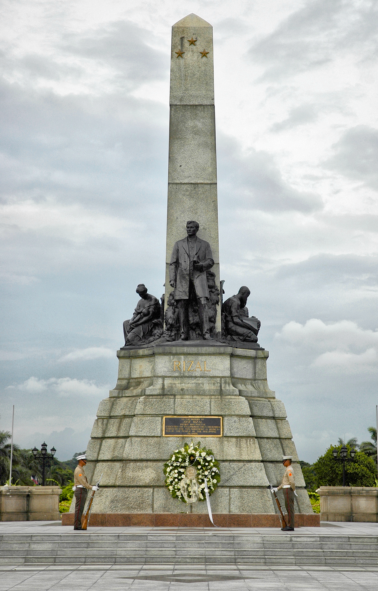

The National Capital Region (NCR) is the metropolitan region encompassing Manila, the capital city of the Philippines, and its surrounding areas. It is the political, economic, and cultural center of the country. NCR is also commonly referred to as Metro Manila.
NCR is composed of 16 cities and one municipality. Here is a list of the cities in NCR:
Manila is the capital city of the Philippines and one of the oldest cities in the country. It is known for its historical sites such as Intramuros, a walled city that dates back to the Spanish colonial era. Manila is also home to various educational institutions, government offices, and commercial centers.
Quezon City is the largest city in NCR, Quezon City is a bustling urban center with a diverse range of residential, commercial, and industrial areas. It is known for its vibrant nightlife, shopping malls, and entertainment hubs. Quezon City is also home to several government agencies, educational institutions, and the Philippines' major television networks.
Caloocan is a highly urbanized city located in the northern part of Metro Manila. It serves as a major transportation hub with numerous bus terminals and railway stations. Caloocan is also known for the historical monument of Andres Bonifacio, a key figure in the Philippine Revolution against Spanish colonization.
Las Piñas is a suburban city known for its iconic tourist attraction, the Bamboo Organ, which is a centuries-old musical instrument made from bamboo pipes. The city is also famous for its annual "Parol Festival," showcasing beautifully crafted Christmas lanterns.
Makati is the financial and central business district of the Philippines. It is home to multinational corporations, banks, luxury hotels, shopping centers, and upscale residential areas. Makati is known for its vibrant nightlife, high-end restaurants, and the Ayala Triangle Gardens.
Malabon is a city known for its rich culinary heritage, particularly its delectable seafood dishes. It is located along the coastline of Manila Bay and is crisscrossed by numerous estuaries and rivers. The city is famous for its traditional "pancit malabon," a noodle dish topped with various seafood.
Mandaluyong is a highly urbanized city known for its thriving business district and shopping centers. It is home to the Ortigas Center, a major commercial and financial hub in Metro Manila. Mandaluyong is also known for its lively nightlife and the annual "Kapitolyo Food Festival," which showcases a wide variety of local and international cuisines.
Marikina is a city famous for its shoe industry, often referred to as the "Shoe Capital of the Philippines." It is known for producing high-quality shoes and hosting the annual Marikina Shoe Festival. The city is also recognized for its well-maintained parks and the Marikina River Park, which offers recreational activities.
Muntinlupa is a city located in the southern part of Metro Manila. It is known for hosting several industrial parks and commercial zones. The city is home to Filinvest City, a major business and residential district, as well as the famous Alabang Town Center, a popular shopping and dining destination.
Navotas is a coastal city known for its fishing industry and seafood market. It is situated along Manila Bay and is home to various fishing communities. Navotas is also known for its annual "Pagoda Festival," which features a fluvial parade in honor of the city's patron saint.
Parañaque is a diverse city with a mix of residential, commercial, and industrial areas. It is home to the Ninoy Aquino International Airport (NAIA), the country's primary gateway. Parañaque also boasts popular attractions such as the Entertainment City, a complex of luxury hotels, casinos, and entertainment venues.
Pasay is another city located near the Manila Bay coastline and is known for its major transportation hubs. It is home to the Cultural Center of the Philippines Complex, which houses various theaters and cultural institutions. Pasay is also where the SM Mall of Asia, one of the largest shopping malls in Asia, is located.
Pasig is a highly urbanized city situated along the eastern border of Metro Manila. It is known for its commercial and business districts, including Ortigas Center. Pasig is also famous for its historical sites, such as the Kapitolyo Heritage Zone, and its annual "Paskotitap" Christmas festival.
Pateros is a small municipality located entirely within Metro Manila. It is known for its traditional dish called "balut," which is a fertilized duck egg considered a delicacy in the Philippines. Pateros is also famous for its colorful "Kasuy Festival," which celebrates the local cashew industry.
San Juan is the smallest city in Metro Manila and is known for its historical significance. It is home to the Pinaglabanan Shrine, a national historical landmark commemorating the Battle of San Juan del Monte. San Juan is also famous for its annual "Wattah Wattah Festival," where locals engage in a friendly water-dousing event.
Taguig is a rapidly developing city known for its modern residential and commercial areas. It is home to the Bonifacio Global City (BGC), a thriving business district with high-rise buildings, luxury residences, and international schools. Taguig is also known for its upscale shopping centers and the Mind Museum, a science museum.
Each city in NCR contributes to the vibrant and dynamic character of Metro Manila, offering a wide range of experiences, attractions, and opportunities for residents and visitors alike.